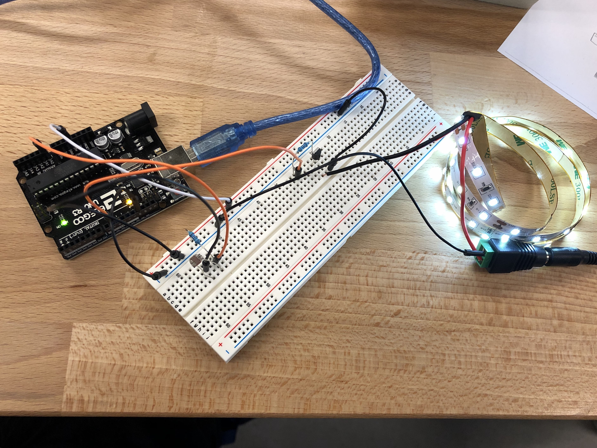
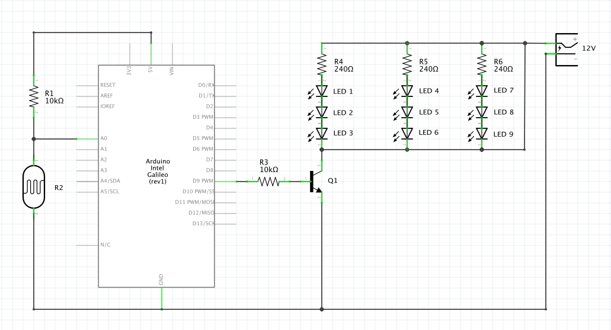

Yuki Asakura's Assignment 4!

Circuit Operation. The LED strip glows based on the amount of light the photoresistor detects.

Circuit board
// Constants
const int analogInPin = A0;
int ledPin = 9; // LED connected to digital pin 9
int sensorValue = 0; // value read from the photoresistor
int outputValue = 0; // value output to the PWM (analog out)
//Setting up Arduino pins and serial monitor
void setup() {
pinMode(analogInPin, INPUT); // set analogInPin A0 as an input
Serial.begin(9600); // initialize serial communications at 9600 bps
}
//This function will keep looping
void loop() {
sensorValue = analogRead(analogInPin); // set sensorValue as the value read by analogInPin
Serial.println(sensorValue); // write the sensorValue on the serial monitor
outputValue = map(sensorValue, 100, 600, 124, 255); // map the outputValue from the sensorValue
analogWrite(ledPin, outputValue); //set the brightness of the ledPin as the outputValue
}
Code Snippet

Schematic + Calculation
*Note: In reality, the light strip actually had 60 LEDs total. The schematic above currently shows 9 LEDs for simplicity reasons.
(300 LEDs)/(18 watts) = (60 LEDs)/(X watts)
X = 3.6 watts
P = IV
3.6 watts = I(12V)
I = 0.3A
Here I show how to calculate the amount of current flowing through a transistor. The whole LED strip has 300 LEDs and uses 18 watts. Because I only used 60 LEDs, it should only use 3.6 watts. From P=IV, I can determine the current with the Power value I just found and the 12V voltage supplied from the power plug. Current flowing through the transistor is 0.3A. Considering that the transistor can provide a maximum of 0.6A of current, the circuit is operating safely.
12V - 3V - 3V - 3V = 3V
V = IR
3 = I(240Ω)
I = 0.0125A
At the LED strip, the top of every 3rd strip starts with 12V from the power strip. But because of the voltage drops from the LEDs, there only remains 3V by the bottom of every strip. Based on the 240Ω each LED strip has, the current running through each strip is 0.0125A.
V = IR
5 = (0.02)R
R = 250Ω
Above I show the calculation to find a safe resistance value for the photoresistor. Since the power supplied from the Arduino is 5V and the expected current is 20mA, the amount of resistance needed to prevent the board from frying is 250Ω. I used a 1kΩ resistor just to be safe.